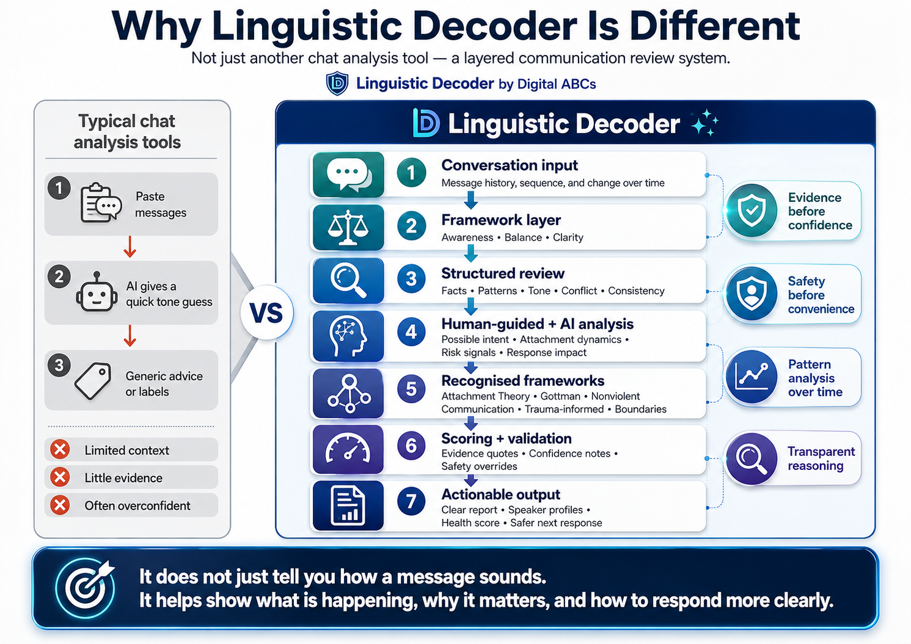
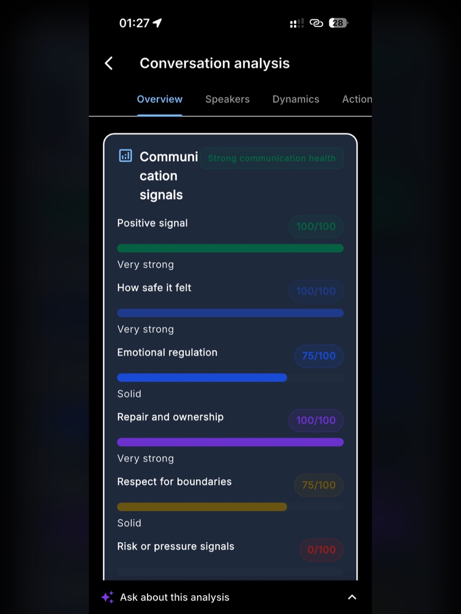
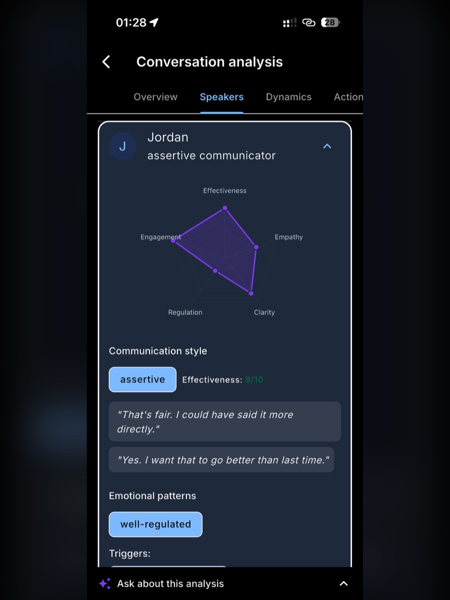
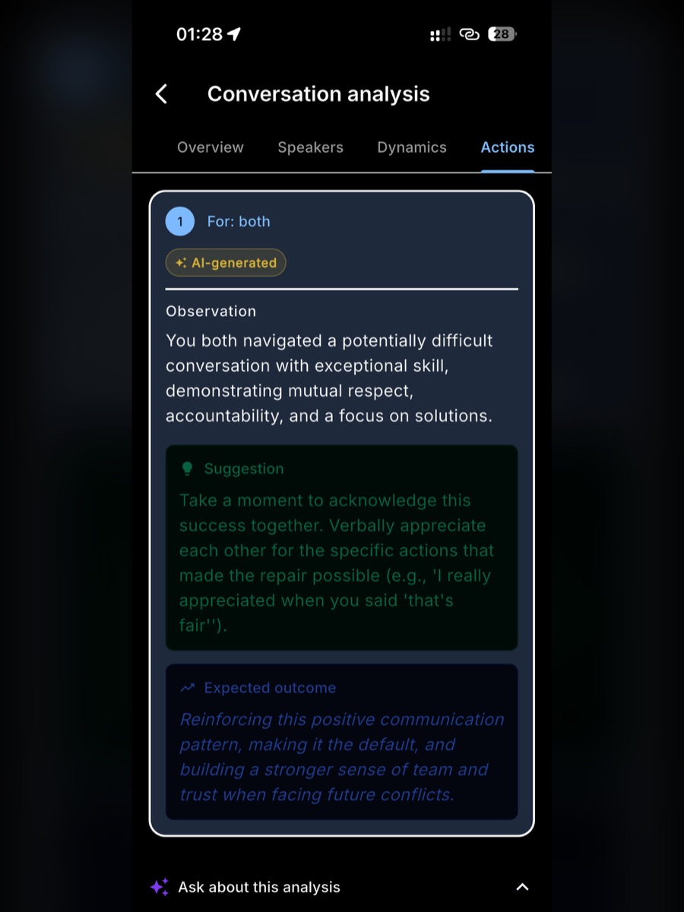
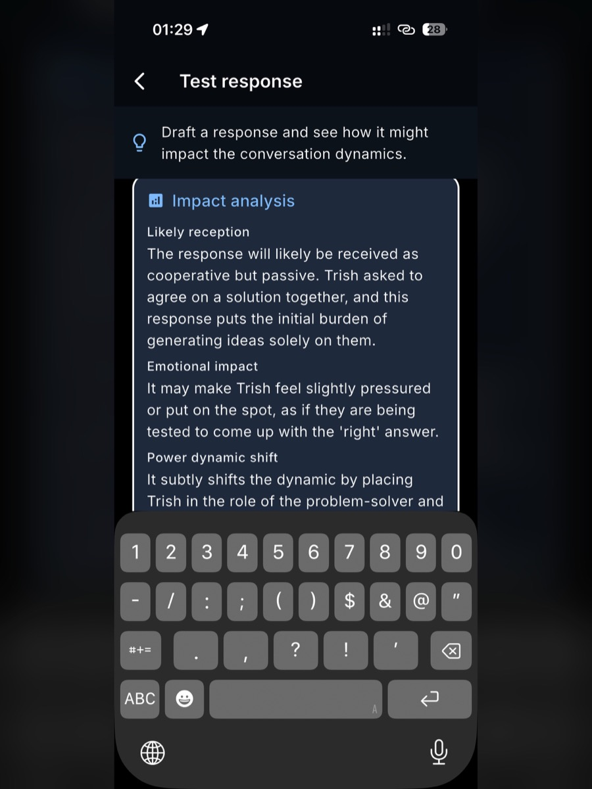

Linguistic Decoder helps you read written conversations with more structure: what was said, what the pattern might suggest,
and where the uncertainty still sits. It is clarity technology, not a mind-reading machine.
Five free analyses to start. No diagnosis, no certainty theatre, no replacing your judgement.
What is Linguistic Decoder?
Linguistic Decoder is an AI-assisted iPhone app from Digital ABCs for message analysis,
tone cues, possible intent, communication patterns, confidence notes, and calmer response options.
See the difference
From “what did that mean?” to a clearer next move.
Watch the 28-second overview, then see why Linguistic Decoder goes beyond a quick tone guess.
It uses a structured, evidence-aware review and keeps uncertainty visible instead of manufacturing certainty.
Clarity in under 30 seconds
A quick look at how Linguistic Decoder turns a confusing message into something you can work with.

Why it is different from a generic chatbot
Evidence before confidence, safety before convenience, pattern analysis over time, and transparent reasoning.
Ready to read the next message more clearly? Start with five free analyses on iPhone.
AI message analysis for texts, emails, and written conversations.
Linguistic Decoder is built for people who want to pause before reacting to a confusing written exchange.
It helps users inspect what was said, what may be implied, what remains uncertain, and how to respond with more clarity.
Use it when you want to understand
Whether a message reads warm, rushed, distant, direct, hesitant, or unclear
What facts are present versus what your own worry or history may be adding
Whether the exchange shows reciprocity, follow-through, ambiguity, or pressure
How to draft a calmer reply without treating AI as the decision-maker
Current availability
Linguistic Decoder is available now for iPhone through the Apple App Store.
Android is not live yet; Digital ABCs is preparing the Google Play path and welcomes volunteer beta testers at info@digitalabcs.com.au.
The product is privacy-aware, AI-assisted, and intentionally framed as communication clarity rather than diagnosis,
legal advice, mental health advice, or certainty about another person's motives.
Inside the app
Real App Store screenshots, not a made-up preview.
See how Linguistic Decoder moves from a conversation to patterns, speaker profiles, suggested actions, and response testing.
The app is designed to help you notice what is happening before you decide what to do next.
Start with the conversationReview the exchange, confirm speakers, and choose whether to test a response or view the analysis.

Read the signalsSee communication health, boundaries, safety, regulation, and risk indicators in plain language.

Understand the speakersSpeaker profiles help show communication style and emotional patterns without claiming certainty.

Choose the next moveUse suggestions as a reflection point, then keep your own judgement in charge.
Track patterns over timeInsights become more useful as your conversation history grows and patterns become easier to see.

Test before sendingDraft a response and inspect how it may land before you press send.
Everyday value
The point is clearer communication, not forced drama.
Linguistic Decoder should feel useful when messages are ordinary, practical, affectionate, ambiguous, or slightly uneven.
If the app only feels impressive when it invents conflict, it is doing the wrong job.
See tone faster
Spot reassurance, directness, hesitation, or emotional distance without treating any one line as absolute proof.
Catch small patterns
Notice pacing, reciprocity, follow-through, or ambiguity that can be easy to miss when you are already inside the conversation.
Reflect before reacting
Use the output as a pause point so you can think more clearly before sending the next message or drawing a conclusion.
Useful for home coordination
Even simple coordination messages can reveal whether the exchange feels warm, collaborative, rushed, or unclear.
Useful for work check-ins
Short professional exchanges can still show responsiveness, clarity, expectation-setting, and pressure points.
Useful for social planning
Friendly messages often contain small cues about reassurance, flexibility, enthusiasm, or uncertainty.
Data handling flow
What happens after you press Analyse?
Linguistic Decoder is designed around a Digital ABCs framework that prepares the message before AI processing,
then turns the AI response back into a structured report you can read in plain language.
1
Message enters the framework
The text you submit is received by the Linguistic Decoder workflow so it can be prepared before analysis.
2
Direct identifiers are redacted
Where detected, the framework replaces sensitive details with placeholders, including:
Names and contact details
Addresses, handles, links, and locations
Dates, times, account numbers, and reference codes
3
Analysis parts are extracted
The framework prepares the parts needed for interpretation, such as message fragments, tone cues,
uncertainty markers, pacing, reciprocity, and possible context labels.
4
Prepared text goes to AI
The prepared analysis package is sent to a trusted AI provider for language-pattern processing.
The AI does not receive the original message in the same user-facing form.
5
The framework builds the report
The AI response returns to the Digital ABCs framework, where it is organised into the report structure:
observations, possible meanings, confidence notes, limits, and response options.
6
Your view is reassembled
Placeholder details are mapped back into the user-facing report view so the result makes sense to you,
while the AI-assisted interpretation remains framed as guidance rather than certainty.
Go deeper
Download the app or leave your email.
The app is where Linguistic Decoder is meant to do more than a quick first impression.
Download on iPhone
Open the App Store listing and start with five free analyses. This is the main conversion path for Linguistic Decoder today.
Fastest route if you are ready to try it now
Good fit if you want the full Linguistic Decoder experience
Support and trust pages stay available from the website
Anyone wishing to volunteer can email info@digitalabcs.com.au and mention Android beta testing.
Important limits
Useful reflection tool, not a certainty machine.
The trust surface still matters. It is simply positioned after the value demonstration instead of blocking the first interaction.
Not medical or mental health advice
The app can support reflection, but it does not diagnose, treat, or replace qualified support.
Not legal or professional advice
Do not rely on the output for contracts, disputes, employment matters, or other professional decisions.
Not for crisis or safety decisions
If a situation involves abuse, self-harm, immediate danger, or urgent welfare concerns, do not rely on a beta AI product. High-threat signals may trigger a safety check-in, but the app is not a crisis service.
Product FAQ
Common questions about Linguistic Decoder.
Short answers for people comparing AI message analysis tools, privacy expectations, and platform availability.
What does Linguistic Decoder analyse?
It analyses written messages for communication signals such as tone, directness, reassurance, hesitation,
reciprocity, uncertainty, possible intent, and response options.
Does it know what someone really meant?
No. The app offers plausible readings with confidence notes. It does not claim certainty about motives,
hidden meanings, relationships, or a person's emotional state.
Is Android available?
Not yet. The current public route is the iPhone App Store listing. Digital ABCs is preparing the Android release
and welcomes beta testers; volunteers can email info@digitalabcs.com.au.
Is it safe for sensitive situations?
Do not rely on Linguistic Decoder for crisis, abuse, self-harm, medical, mental health, legal,
employment, contract, or urgent welfare decisions. Use qualified support for those situations.
Use the app with the trust pages open.
Linguistic Decoder is an AI-assisted product. Before you submit anything sensitive, read how Digital ABCs handles
privacy, AI processing, account deletion, child contexts, and regional notices.